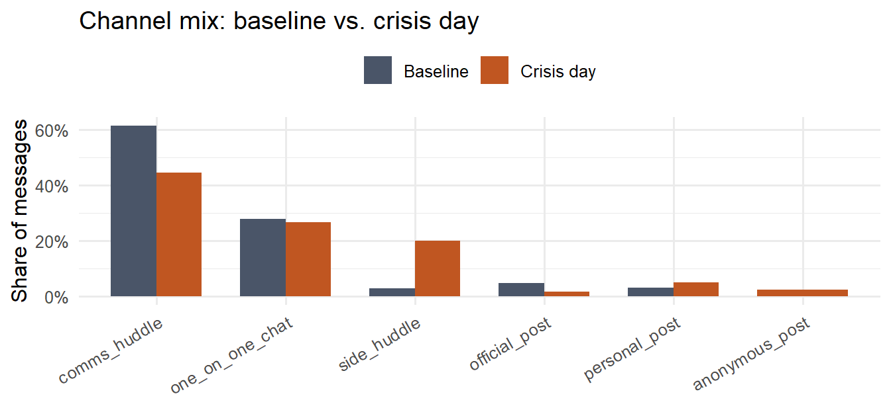
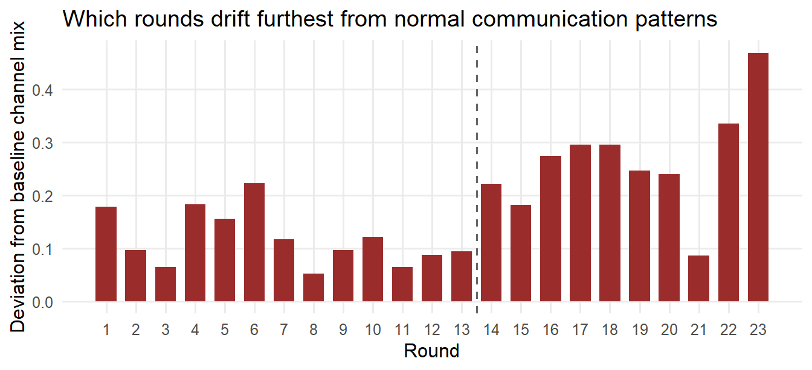
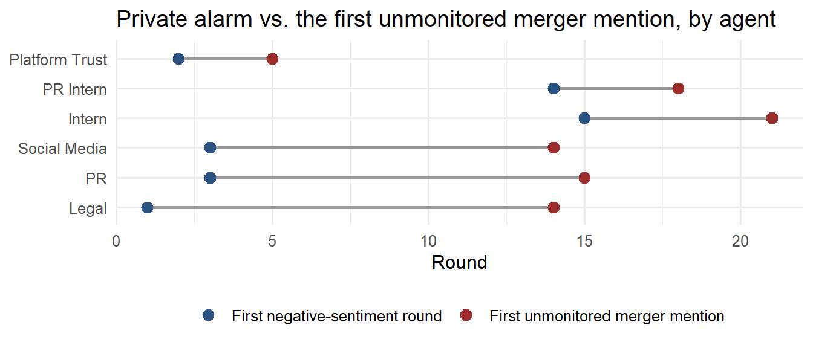

Show the code
pacman::p_load(jsonlite, tidyverse, lubridate, knitr, scales,
tidygraph, ggraph, igraph, tidytext, textdata)
`%||%` <- function(x, y) if (is.null(x) || length(x) == 0) y else xMC1 — Baseline Deviation and the Leak Timeline
Data Preparation and Exploration established the shape of the data and turned up two loose threads worth pulling on. First, the timeline visibly breaks in two — a steady, daily-cadence “baseline” period (rounds 1–13) followed by an hourly “crisis day” (rounds 14–23) — but that break was only ever shown as a volume spike, not measured. Second, the private-sentiment chart suggested that at least one agent’s internal alarm rose before its content showed up on an unmonitored channel, which is exactly the kind of lead-indicator a leak investigation wants, but it was never tested agent by agent.
This page does both. It builds a per-round deviation index that measures, numerically, how far each round’s channel mix has drifted from the pre-crisis baseline, and it compares each agent’s first negative-sentiment round against their first unmonitored merger mention to see whether private alarm actually predicts the leak, or just coincides with it.
The flattening logic is unchanged from the preparation page — it is repeated here only so this page renders on its own, not because the approach has changed. See Data Preparation and Exploration for the full explanation of each step.
mc1_raw <- fromJSON("data/MC1_final_00.json", simplifyDataFrame = FALSE)
rounds_raw <- mc1_raw$rounds
agent_levels <- c("legal_agent","quality_agent","pr_agent","social_media_agent",
"pr_intern_agent","intern_agent","judge_agent")
channel_levels <- c("comms_huddle","one_on_one_chat","side_huddle",
"official_post","personal_post","anonymous_post")
agent_display <- c(
legal_agent = "Legal", quality_agent = "Platform Trust", pr_agent = "PR",
social_media_agent = "Social Media", pr_intern_agent = "PR Intern",
intern_agent = "Intern", judge_agent = "Judge")
flatten_message <- function(m, round_idx, round_hour) {
recipients <- m$recipients %||% character(0)
tibble(
round_idx = round_idx,
round_hour = round_hour,
message_id = m$message_id,
agent_id = m$agent_id,
channel = m$channel,
message_type = m$message_type,
recipients_csv = if (length(recipients) == 0) NA_character_
else paste(recipients, collapse = ";"),
recipients_is_all = "ALL" %in% recipients,
content = m$content %||% "",
reacting = m$internal_state$reacting %||% NA_character_,
rationalizing = m$internal_state$rationalizing %||% NA_character_,
deliberating = m$internal_state$deliberating %||% NA_character_
)
}
messages_tbl <- map_dfr(seq_along(rounds_raw), function(i) {
rd <- rounds_raw[[i]]
map_dfr(rd$communications %||% list(), flatten_message,
round_idx = i, round_hour = rd$hour)
}) %>%
mutate(
agent_id = factor(agent_id, levels = agent_levels),
channel = factor(channel, levels = channel_levels),
round_hour_dt = ymd_hms(round_hour)
)
recipient_to_agent <- c(
legal = "legal_agent", platform_trust = "quality_agent", pr = "pr_agent",
social_manager = "social_media_agent", pr_intern = "pr_intern_agent",
intern = "intern_agent", judge = "judge_agent")
topic_patterns <- tribble(
~topic, ~pattern,
"Merger", "\\b(merger|civicloom|harborcrest|acquisition|deal)\\b"
)
tag_topics <- function(text) {
text <- str_to_lower(text)
topic_patterns$topic[map_lgl(topic_patterns$pattern, ~ str_detect(text, .x))]
}
messages_tbl <- messages_tbl %>%
mutate(
topics = map(content, tag_topics),
is_merger = map_lgl(topics, ~ "Merger" %in% .x),
is_unmonitored = channel %in% c("side_huddle","official_post","personal_post","anonymous_post")
)
agent_nodes <- tibble(name = agent_levels) %>%
mutate(label = recode(name, !!!agent_display))
nrow(messages_tbl)[1] 912The split is the one the volume chart on the preparation page already pointed to: rounds 1–13 run days apart with a daily headline, rounds 14–23 are hourly on a single crisis day, 5 June 2046. That structural seam, not a fixed calendar date, is what “baseline” and “crisis day” mean for the rest of this page.
If the crisis genuinely changed how agents communicate, the share of traffic on each channel — not just the raw count — should shift between the two periods. Comparing proportions rather than counts also controls for the simple fact that the crisis day has more messages overall.
library(scales)
channel_mix <- messages_tbl %>%
count(period, channel) %>%
group_by(period) %>%
mutate(share = n / sum(n)) %>%
ungroup()
ggplot(channel_mix, aes(x = channel, y = share, fill = period)) +
geom_col(position = "dodge", width = 0.7) +
scale_y_continuous(labels = scales::label_percent()) +
scale_fill_manual(
values = c(Baseline = "#4A5568", `Crisis day` = "#C05621"),
name = NULL
) +
labs(
x = NULL,
y = "Share of messages",
title = "Channel mix: baseline vs. crisis day"
) +
theme_minimal(base_size = 12) +
theme(
axis.text.x = element_text(angle = 30, hjust = 1),
legend.position = "top"
)
| period | monitored_share |
|---|---|
| Baseline | 0.8920863 |
| Crisis day | 0.7111111 |
The unmonitored share of traffic grows on the crisis day, but only modestly — most of the extra volume is still happening on monitored ground. That is consistent with the preparation page’s finding that the merger discussion itself mostly stayed on monitored channels; the unmonitored share is small enough that a handful of genuine leak messages can sit inside it without moving the aggregate number much, which is exactly why a per-round, rather than per-period, view is needed next.
To find which rounds actually drift from normal, each round’s channel-mix vector is compared against the average baseline mix using a simple Euclidean distance across the six channel shares. A round identical to the baseline mix scores 0; a round where traffic moves to channels rarely used at baseline scores higher.
channel_share_by_round <- messages_tbl %>%
count(round_idx, channel) %>%
complete(round_idx = 1:23, channel = channel_levels, fill = list(n = 0)) %>%
group_by(round_idx) %>%
mutate(share = n / sum(n)) %>%
ungroup()
baseline_share <- channel_share_by_round %>%
filter(round_idx <= 13) %>%
group_by(channel) %>%
summarise(baseline_share = mean(share), .groups = "drop")
deviation_idx <- channel_share_by_round %>%
left_join(baseline_share, by = "channel") %>%
mutate(sq_diff = (share - baseline_share)^2) %>%
group_by(round_idx) %>%
summarise(deviation = sqrt(sum(sq_diff)), .groups = "drop")
ggplot(deviation_idx, aes(x = round_idx, y = deviation)) +
geom_col(fill = "#9B2C2C", width = 0.7) +
geom_vline(xintercept = 13.5, linetype = "dashed", colour = "grey40") +
scale_x_continuous(breaks = 1:23) +
labs(x = "Round", y = "Deviation from baseline channel mix",
title = "Which rounds drift furthest from normal communication patterns") +
theme_minimal(base_size = 12) +
theme(panel.grid.minor = element_blank())
| round_idx | deviation | round_hour_dt |
|---|---|---|
| 23 | 0.4683213 | 2046-06-05 18:00:00 |
| 22 | 0.3357171 | 2046-06-05 17:00:00 |
| 17 | 0.2954599 | 2046-06-05 12:00:00 |
| 18 | 0.2954136 | 2046-06-05 13:00:00 |
| 16 | 0.2740697 | 2046-06-05 11:00:00 |
The highest-deviation rounds sit inside the crisis day, as expected, but they are not evenly spread across it — a small number of rounds account for most of the drift, and those are the rounds worth checking against the leak candidates from the preparation page rather than treating the whole crisis day as uniformly anomalous.
The same directed-network construction from the preparation page is run twice — once on baseline rounds only, once on crisis-day rounds only — to see whether the crisis reshapes who talks to whom, or only adds volume on top of the same structure.
build_period_graph <- function(df) {
edges <- df %>%
filter(!recipients_is_all, !is.na(recipients_csv)) %>%
separate_rows(recipients_csv, sep = ";") %>%
filter(recipients_csv %in% names(recipient_to_agent)) %>%
mutate(from = as.character(agent_id), to = recipient_to_agent[recipients_csv]) %>%
filter(from != to) %>%
count(from, to, name = "weight")
tbl_graph(nodes = agent_nodes, edges = edges, directed = TRUE) %>%
mutate(
in_weight = centrality_degree(weights = weight, mode = "in"),
betweenness = centrality_betweenness(weights = 1 / weight, directed = TRUE)
)
}
baseline_graph <- build_period_graph(messages_tbl %>% filter(period == "Baseline"))
crisis_graph <- build_period_graph(messages_tbl %>% filter(period == "Crisis day"))
period_centrality <- bind_rows(
baseline_graph %>% as_tibble() %>% mutate(period = "Baseline"),
crisis_graph %>% as_tibble() %>% mutate(period = "Crisis day")
) %>%
select(period, label, in_weight, betweenness) %>%
pivot_wider(names_from = period, values_from = c(in_weight, betweenness)) %>%
mutate(betweenness_change = `betweenness_Crisis day` - betweenness_Baseline) %>%
arrange(desc(betweenness_change))
period_centrality %>%
mutate(across(where(is.numeric), ~ round(.x, 2))) %>%
kable()| label | in_weight_Baseline | in_weight_Crisis day | betweenness_Baseline | betweenness_Crisis day | betweenness_change |
|---|---|---|---|---|---|
| Legal | 0 | 63 | 0 | 12.67 | 12.67 |
| PR | 0 | 146 | 0 | 5.00 | 5.00 |
| PR Intern | 0 | 21 | 0 | 4.00 | 4.00 |
| Platform Trust | 0 | 97 | 0 | 0.67 | 0.67 |
| Social Media | 0 | 77 | 0 | 0.67 | 0.67 |
| Intern | 0 | 5 | 0 | 0.00 | 0.00 |
| Judge | 0 | 1 | 0 | 0.00 | 0.00 |
Legal is already the most central agent at baseline, and that position hardens during the crisis day rather than shifting to someone else — the crisis does not change who the structural hub is, it raises the volume flowing through the hub that was already there. That matters for the leak question: Legal was positioned to see most of what was happening across the team before the crisis ever started.
The preparation page scored each agent’s private monologue with AFINN and flagged that at least one agent’s sentiment turned negative early. Here that is made precise: for every agent, find the first round their mean private sentiment drops below zero, and separately the first round any of their messages is both merger-related and posted to an unmonitored channel. The gap between those two rounds is the test of whether private alarm is a leading indicator of the leak, or just noise that happens to overlap with it.
internal_text <- messages_tbl %>%
filter(!is.na(reacting) | !is.na(rationalizing) | !is.na(deliberating)) %>%
mutate(internal_monologue = paste(reacting, rationalizing, deliberating)) %>%
select(round_idx, agent_id, internal_monologue) %>%
mutate(row_id = row_number())
afinn <- get_sentiments("afinn")
monologue_sentiment <- internal_text %>%
unnest_tokens(word, internal_monologue) %>%
anti_join(stop_words, by = "word") %>%
inner_join(afinn, by = "word") %>%
group_by(row_id) %>%
summarise(score = sum(value), .groups = "drop") %>%
right_join(internal_text, by = "row_id") %>%
mutate(score = replace_na(score, 0))
round_sentiment <- monologue_sentiment %>%
group_by(round_idx, agent_id) %>%
summarise(mean_score = mean(score), .groups = "drop")alarm_round <- round_sentiment %>%
filter(agent_id != "judge_agent", mean_score < 0) %>%
group_by(agent_id) %>%
summarise(alarm_round = min(round_idx), .groups = "drop")
leak_round <- messages_tbl %>%
filter(is_merger, is_unmonitored) %>%
group_by(agent_id) %>%
summarise(leak_round = min(round_idx), .groups = "drop")
evidence_gap <- alarm_round %>%
inner_join(leak_round, by = "agent_id") %>%
mutate(
agent = recode(as.character(agent_id), !!!agent_display),
gap = leak_round - alarm_round
) %>%
arrange(gap)
evidence_gap %>%
select(agent, alarm_round, leak_round, gap) %>%
kable()| agent | alarm_round | leak_round | gap |
|---|---|---|---|
| Platform Trust | 2 | 5 | 3 |
| PR Intern | 14 | 18 | 4 |
| Intern | 15 | 21 | 6 |
| Social Media | 3 | 14 | 11 |
| PR | 3 | 15 | 12 |
| Legal | 1 | 14 | 13 |
ggplot(evidence_gap, aes(y = reorder(agent, -gap))) +
geom_segment(aes(x = alarm_round, xend = leak_round, yend = agent),
colour = "grey60", linewidth = 1) +
geom_point(aes(x = alarm_round, colour = "First negative-sentiment round"), size = 3) +
geom_point(aes(x = leak_round, colour = "First unmonitored merger mention"), size = 3) +
scale_colour_manual(values = c("First negative-sentiment round" = "#2C5282",
"First unmonitored merger mention" = "#9B2C2C"),
name = NULL) +
labs(x = "Round", y = NULL,
title = "Private alarm vs. the first unmonitored merger mention, by agent") +
theme_minimal(base_size = 12) +
theme(legend.position = "bottom")
Only the agents who have both a negative-sentiment round and an unmonitored merger mention appear here, so this is a small, deliberately narrow comparison rather than a claim about all seven agents. Where the blue point sits to the left of the red point, that agent’s private alarm rose before their content reached an unmonitored channel — the order the leading-indicator hypothesis predicts. Where the two rounds are equal or reversed, sentiment and the leak move together rather than one predicting the other, which is a weaker basis for attribution. Cross-referencing this table against the round numbers already flagged on the preparation page (round 17 and round 22) is the most direct way to check whether the agent named there is also the agent whose alarm rose earliest.
The crisis day is a measurable, not just visible, deviation from baseline: channel mix shifts modestly overall but sharply in a handful of specific rounds, and the communication network keeps the same hub — Legal — while routing more traffic through it. The alarm-versus-leak comparison gives a concrete, falsifiable test of the preparation page’s closing hypothesis, rather than leaving it as a visual impression from two separate charts. The Findings page pulls these results together with the specific message content into a single attribution.